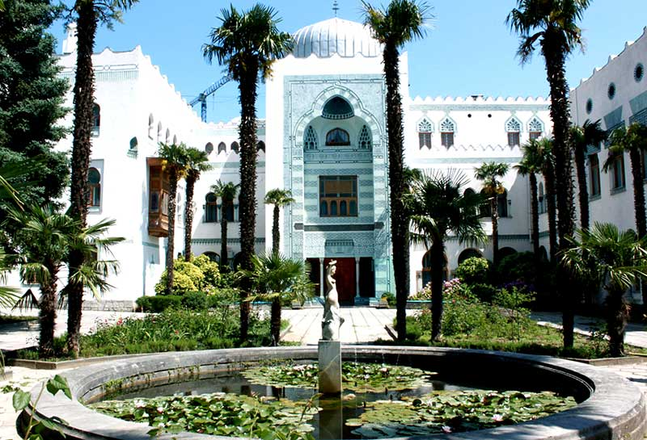

КРЫМ. Обзор пяти самых интересных мест
Топ-5 самых интересных мест в Крыму:
02:08 — #5 Крымский мост
05:59 — #4 Генуэзская крепость
10:54 — #3 МДЦ «Артек»
20:38 — #2 Дворцы Крыма
33:14 — #1 Живописная природа Крыма
Вы часто и много об этом просили! Мы вас услышали — и сняли наше трэвел-шоу «Отпуск без путевки» в Крыму!
В этом выпуске Андрей Разыграев проедется по новёхонькому Крымскому мосту, покажет крепости и красивейшие дворцы полуострова, заглянет в знаменитый «Артек» и восхитит вас живописной крымской природой!
Вторую часть крымских путешествий смотри по ссылке
https://www.youtube.com/watch?v=9xap4...
Канатная дорога Ай-Петри. Ялта. Крым.
Путешествие по Крыму. Что надо знать о канатной дороге в Ай-Петри.
Дворцы и замки Ялты
Ливадийский дворец
Ливадийский особняк – это бывшая резиденция Николая II и его семьи. Возведённый на месте прежнего строения, он получает новое название – Белый Дворец. Стройка велась 17 месяцев. Руководил проектом архитектор Краснов.
Замок сооружён в стиле эпохи Возрождения с элементами декора. Для многочисленной царской семьи было предусмотрено 116 комнат. За период правления император России побывал там четыре раза.
С установлением новой власти судьба его менялась. Изначально там находились госслужбы, с 1925 года строение определили под здравницу. В Белом зале, феврале 1945 года состоялась Ялтинская Конференция глав правительств СССР, Великобритании, США. С 1974 года он открывает двери для свободного посещения, а статус Государственного музея получает в 1993 году. Сегодня в Ливадийском особняке выставлены музейные экспонаты царской семьи: личные вещи, предметы быта.
Массандровский дворец
Несмотря на почтенный возраст, интерес к массандровскому дворцу у туристов не ослабевает. Первоначально он принадлежал князю Воронцову. Его строительство было начато в 1881 году французским архитектором Этьеном Бушаром. Постройка послужила воплощением эпохи Людовика XIII. Своё название он получил от местности, где располагался – Верхняя Массандра.
Со смертью Воронцова строительство остановилось, и недостроенный замок простоял почти семь лет. Впоследствии имение было выкуплено Удельным ведомством для летней резиденции Александра III. Продолжавшееся несколько лет строительство изменили неброское строение и придали ему сказочный вид. Архитектор проекта Месмахер при перестройке украсил здание архитектурным декором.
До 1941 года здесь располагался туберкулёзный санаторий, затем его определили для размещения института виноделия. К 1948 году располагается госдача «Сталинская», где отдыхали первые лица государства. В настоящее время проводятся экскурсии.
Дворец Эмира Бухары
Строительство неразрывно связано дружбой Эмира Бухарского с семьёй Романовых. Чтобы находиться вблизи царской четы, он приобретает участок вблизи Приморского парка и начинает строительство. Строение выполнено в мавританском стиле под руководством архитектора Тарасова.
Для отделки использованы элементы восточной культуры. За четыре года была построены двухэтажная резиденция в сочетании колон и балюстрад. Любимый дворец назван Эмиром «Дилькисо», то есть «обворожительный».
С приходом советской власти в здании открыт музей Востока. За годы войны корпус был основательно утрачен. После восстановительных работ открыта здравница «Ялта».
Дворец графа Мордвинова
За преданное служение Родине графу Николаю Мордвинову было даровано Екатериной II два участка в Крыму. К 1794 году на Ялтинском участке возведён небольшой особняк под дачу и разбит большой сад. До наших дней это строение не сохранилось, участок получил название «Хорошая пустошь».
Правнук Александр Мордвинов в начале XX века решает построить особняк, соответствующий положению и пригодный для проживания всей семьёй. Строительство велось по проекту Фёдора Нагеля, а руководство осуществлялось архитектором Оскаром Вегенером. К 1903 году был построен замок в стиле итальянского ренессанса. Гурзуфский песчаник зеленоватого оттенка и ялтинский известняк гармонично вписывают его в местный ландшафт. Общая площадь постройки составила 2000 квадратных метров.
При советской власти здесь располагался санаторий Минобороны СССР. С 2000 года разместилось отделение военного санатория «Ялтинский».
Воронцовский дворец
Воронцовский замок - самое посещаемое место Алупки. Построенный за период 1828-1848 годы, он служил летней резиденцией губернатору Новороссии графу М. Воронцову. Сооружённый из природного материала – серо-зелёного диабаза, он гармонично вписывается в окружающую действительность. Проект разработан английским архитектором Эдуардом Блором и сочетает различные направления и стили: английскую готику и культуру Востока и Индии.
В особняке насчитывается 150 уникальных комнат с роскошной отделкой и мраморными каминами. Здание стоит в окружении знаменитого Алупкинского парка.
С установлением власти Советов особняк отдан государству. С 1921 года открыт музей. С 1945 года обозначался как госдача. 1956 год - ему возвращён статус музея.
Юсуповский дворец
Он расположен в посёлке Кореиз и является «изюминкой» Большой Ялты. Изначально на территории располагалась усадьба княгини Голицыной. В конце XIX века его приобретает князь Юсупов. В 1909 году начинается перестройка строения архитектором Красновым, и сооружение приобретает современный вид. За пять лет преобразований облик постройки изменен, внесены элементы ренессанса. На фасаде здания установлены скульптуры мифических героев.
После национализации отдан для дач. 1945 год - находилась советская делегация Ялтинской Конференции. По окончании войны размещались дачи. С 2014 года передан управлению делами Президента.
Замок "Ласточкино гнездо"
«Ласточкино гнездо» находится на Аврориной скале, посёлке Гаспра – это визитная карточка побережья Крыма. Первым владельцем тогда ещё деревянного дома являлся генерал, имя которого неизвестно. Затем у замка сменилось много собственников и к началу XX века строение на скале продано немецкому барону Штейнгелю. Замок в готическом стиле спроектирован архитектором Шервудом.
Революция 1917 года национализировала «Ласточкино гнездо». Землетрясение 1927 года сильно разрушило постройку, и доступ к ней стал закрыт. В середине XX века восстановительные работы изменили его вид и открыли свободный доступ для туристов.
Дворец "Дюльбер"

За несколько километров от Ялты, в посёлке Кореиз расположен белоснежный Дюльбер. Возведённое к 1897 году в имении князя Петра Романова под руководством архитектора Краснова, строение создано в мавританском стиле и имело около 100 комнат. «Дюльбер» при переводе означает «Прекрасный», что соответствует реальности. Интересен тот факт, что строение спасло жизни нескольким членам царского рода, превратившись на время в крепость и выдержав осаду.
За годы советской власти размещался санаторий «Красное Знамя», в послевоенное время был восстановлен и использовался для отдыха партийной элиты.
Дворец "Кичкинэ"
Он построен вблизи посёлка Гаспра. Скромные размеры особняка определили его название - «Кичкинэ», что при переводе обозначает «Малютка». Владельцем строения был Дмитрий Романов, внук Николая I.
Строительством руководили архитекторы Тарасовы. Законченный к 1913 году, в модном тогда мавританском стиле, миниатюрный замок украшен изящными башнями, балюстрадой. Особняк окружён парком, а к морю направляется лестница, сделанная на скале.
После революции строение было национализировано и располагался санаторий для высшего военного состава. Сегодня здесь размещается хостел «Кичкинэ».
Дворец "Харакс"
В посёлке Гаспра находится «Харакс», получивший своё название от одноимённой Римской крепости, размещавшейся в I веке. Владельцем замка являлся один из представителей рода Романовых – Георгий Михайлович. Здание спроектировано архитектором Красновым в стиле позднего модерна. Строительство продолжалось четыре года, и к 1908 году было закончено. Харакс сложен из известняка, а минимальный декор в фасаде, оригинальность форм и цвета придают ему схожесть с шотландскими постройками.
Трёхэтажное здание имеет 46 комнат. Вокруг раскинулся огромный парк. С установлением советской власти здесь расположилась одноимённая здравница. После войны переименован в санаторий «Днепр».
Дворец "Суук – Су"
Супружеская чета Владимир Березин и Ольга Соловьёва приобретают в 1897 году участок в Гурзуфе. Инженер Берёзов задумал построить на купленной земле элитный курорт, но скоропостижная смерть нарушает планы и начатое дело продолжает его жена. Открытие курорта, получившего название «Суук – су» (холодная вода) произошло в 1903 году. Архитектурный проект был разработан Красновым. Дворец построен в стиле французского ренессанса.
Октябрьская революция изменила предназначение «Суук – су». Здесь отдыхали партийные руководители. К началу XX века бывший курорт передают пионерской организации «Артек». Сегодня в помещении располагаются музей космонавтики и «Артека».
Имение "Ясная Поляна"
Усадьба Ясная Поляна – самый старейший памятник на побережье Крыма. Имение в Гаспре принадлежало князю Голицыну. Построенный там замок с двумя зубчатыми башнями сооружён в английском стиле архитектором Эльсоном. Строительство было закончено к 30-м годам XIX века. Последним владельцем стала графиня Панина, которая дала сооружению вторую жизнь.
Она воплотила некоторые новшества – сдавала поместье в аренду. Среди живших в замке много известных личностей: Куприн, Толстой, Чехов. Помещение располагало двенадцатью комнатами, а общая площадь составляла 145 квадратных метров.
Название «Ясная Поляна» усадьба получила к 1947 году в честь Льва толстого, в жизни которого присутствовала такая же усадьба под Тулой.
В период СССР здесь находился курорт для деятелей науки. Сегодня здесь располагается санаторий «Ясная Поляна».
Замки на карте Ялты